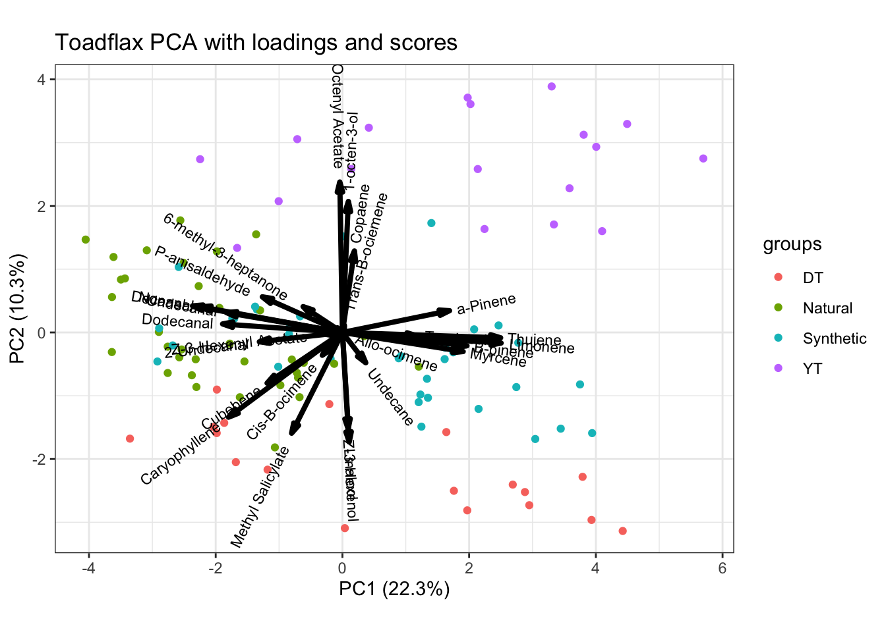

-1.png)
Toadflax Analysis
Boxplot Comparisons
Multivariate Analysis
Multivariate statistical analyses were conducted in R (R Core Team 2024) using RStudio (version 4.2.1) using PCA, Permutational Multivariate ANOVA (PERMANOVA), Permutational Analysis of Multivariate Dispersion (PERMDISP), and Random Forest modeling. The data was first transformed using a center log-ratio (CLR) transformation, a technique commonly used when analyzing multivariate compositional data (Brückner and Heethoff 2017). VOC compositions were compared between samples and types using a permutational multivariate analysis of variance (PERMANOVA, Canberra distance, 999 iterations) tests implemented in the vegan package (v 2.6-4) (Oksanen et al. 2011). This technique uses permutation testing to generate many different rearrangements of the data to assess if the observed differences are statistically significant (Anderson 2017). Data were visualized using ggplot2 (Wickham 2016). The compounds used in this analysis were selected based on consistency of presence across samples , as well as overall quality of mass spectroscopy output.
PCA
Our first look at our PCA results is in the form of a scores plot. This shows us how our data is grouped by type.

Next, we can look at our loadings and see where each compound is pushing the differences in our PCs.

Finally, we can overlay the two plots to get an idea of how our data groups around our compounds. I found this plot a little bit busy, which is why I broke it down in the above two figures.

PERMANOVA
| Df | SumOfSqs | R2 | F | Pr(>F) | |
|---|---|---|---|---|---|
| meta_data$type | 3 | 1.173032 | 0.2591062 | 12.00709 | 0.001 |
| Residual | 103 | 3.354192 | 0.7408938 | NA | NA |
| Total | 106 | 4.527223 | 1.0000000 | NA | NA |
Our results show strong evidence (p-val = 0.001) of a difference between our four plant types (YT, DT, Synthetic, and Natural).
dist <- dist(data.clr)Warning in stats::dist(cdt(x), ...): NAs introduced by coercionpermdisp.results <-
betadisper(dist, data.clr$type)
permdisp.results
Homogeneity of multivariate dispersions
Call: betadisper(d = dist, group = data.clr$type)
No. of Positive Eigenvalues: 26
No. of Negative Eigenvalues: 0
Average distance to median:
DT Natural Synthetic YT
6.572 6.623 6.699 7.161
Eigenvalues for PCoA axes:
(Showing 8 of 26 eigenvalues)
PCoA1 PCoA2 PCoA3 PCoA4 PCoA5 PCoA6 PCoA7 PCoA8
1266.4 922.1 671.8 519.2 406.3 319.9 292.6 258.6 p_value <- anova(permdisp.results)$'Pr(>F)'[1]
if (p_value < 0.05) {
cat("Significant differences in multivariate dispersion among groups.\n")
} else {
cat("We found no significant difference (pval =",anova(permdisp.results)$'Pr(>F)'[1], ") in multivariate dispersion among groups.\n")
}We found no significant difference (pval = 0.5548198 ) in multivariate dispersion among groups.pcoa <-
capscale(dist ~ 1, data = data.clr)
pcoa_df <- data.frame(scores(pcoa)$sites, group = data.clr$type)
ggplot(pcoa_df, aes(x = MDS1, y = MDS2, color = group)) +
geom_point(alpha = 0.7) +
labs(x = "PCo1", y = "PCo2", color = "Type",
title = "PCoA Plot") +
theme_bw() +
stat_ellipse()
Basically what all of the PERMDISP and PCoA results mean is that we are not seeing any significant different in the dispersion within each of our groups when we compare them to one another. We are seeing a very small p-value from our PERMDISP results and a considerable amount of overlap when looking at the PCoA plot.
References
Anderson, Marti J. 2017. “Permutational Multivariate Analysis of Variance (PERMANOVA).” In Wiley StatsRef: Statistics Reference Online, 1–15. Chichester, UK: John Wiley & Sons, Ltd.
Brückner, Adrien, and Michael Heethoff. 2017. “A Chemo-Ecologists’ Practical Guide to Compositional Data Analysis.” Chemoecology 27: 33–46. https://doi.org/10.1007/s00049-016-0227-8.
Oksanen, Jari, L. Gavin Simpson, F. Guillaume Blanchet, and Roeland Kindt. 2011. “Ordination Methods, Diversity Analysis and Other Functions for Community and Vegetation Ecologists.”
Wickham, Hadley. 2016. Ggplot2: Elegant Graphics for Data Analysis. Springer-Verlag New York. https://ggplot2.tidyverse.org.